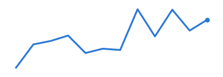

週次 KPI（2025-12-29 の週）
いちばん大きく動いたのはネット注文（千件）で、4週平均より -4.7% でした。
| KPI | 今週 | 前週比 | 4週平均比 |
|---|---|---|---|
| ネット注文（千件） | 9.2 | ▼ -4.2% | ▼ -4.7% |
| 売上（百万円） | 131.4 | ▲ +4.0% | ▲ +0.6% |
| 客数（千人） | 67.7 | ▲ +5.6% | ▲ +3.9% |
| 新規会員（人） | 864.1 | ▼ -0.1% | ▲ +1.2% |
売上（百万円）の直近12週

集計表の 2025-12-29 の週が4つの KPI ともそろったことを確かめてから作成しました。数字は架空です。